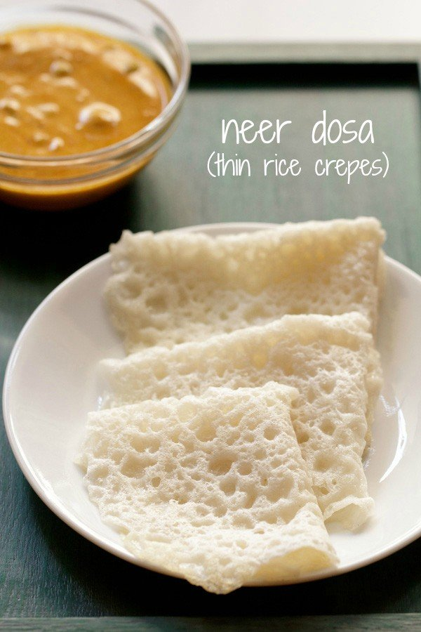

Karnataka is known for its wide variety of dosas and sambar. The food is rich in flavour and consists of various vegetarian and non-vegetarian dishes. However, a typical Kannadiga Oota (meal) consists of rice, sambar, pickle, ghee, dessert, and other curry-based dishes and is served on a banana leaf. Other popular dishes include the super light Neer dosa, Bisi Bele Bhaat which is a lot like a khichdi, and chicken curry known as Korri Gassi. Coconut and fruits are a staple element of these dishes. A signature dish of South Karnataka is the kori rotti. It consists of a thin wafer-like rotti made from rice, dipped in chicken curry. This is the traditional dish of the Tuluvas.
Karnataka (Famous Indian classical music in world, Arts and historical places)
Some Mouth Watering dishes of Karnataka

Neer Dosa

Mysore Pak